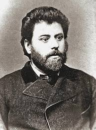

Ion Creangă (1837-1889) a fost un scriitor român clasic, cunoscut mai ales pentru „Amintiri din copilărie” și poveștile sale pline de umor și învățăminte. A fost diacon și învățător, având un stil narativ autentic, inspirat din viața satului moldovenesc. Prietenia sa cu Mihai Eminescu l-a ajutat să-și publice lucrările, care au devenit repere ale literaturii române.

Scrierile lui Creangă surprind tradițiile, limbajul și spiritul poporului român, având un caracter realist și anecdotic. Poveștile sale, precum „Harap-Alb” și „Punguța cu doi bani”, sunt apreciate pentru umorul savuros și lecțiile morale. Moștenirea sa literară rămâne esențială în cultura română.
Povestea lui „Harap-Alb” a fost publicată pentru prima dată în 1877 în revista „Convorbiri Literare”, sub îndrumarea lui Titu Maiorescu. Inspirată din basmele populare românești, opera îmbină elemente fantastice cu teme universale, precum inițierea eroului, lupta dintre bine și rău și importanța prieteniei. Stilul narativ viu, umorul și limbajul autentic transformă „Povestea lui Harap-Alb” într-o capodoperă a literaturii române, fiind considerată o reinterpretare originală a basmului tradițional.
